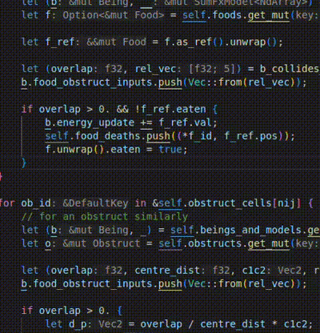
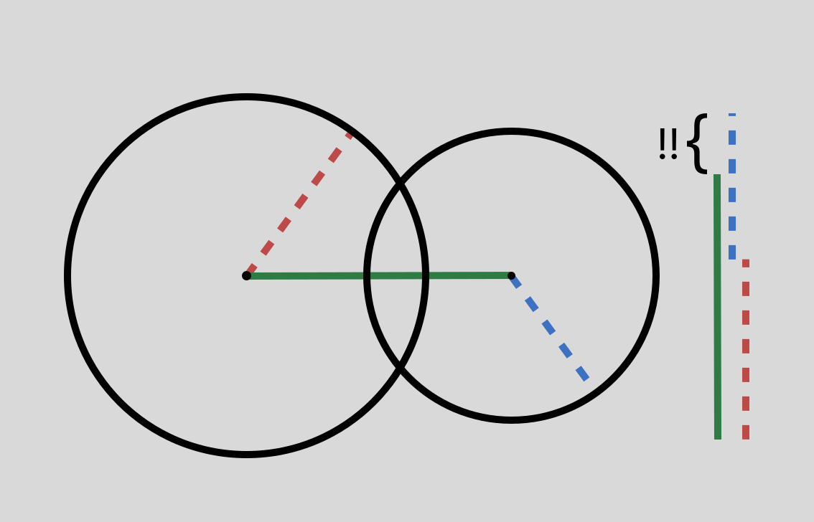
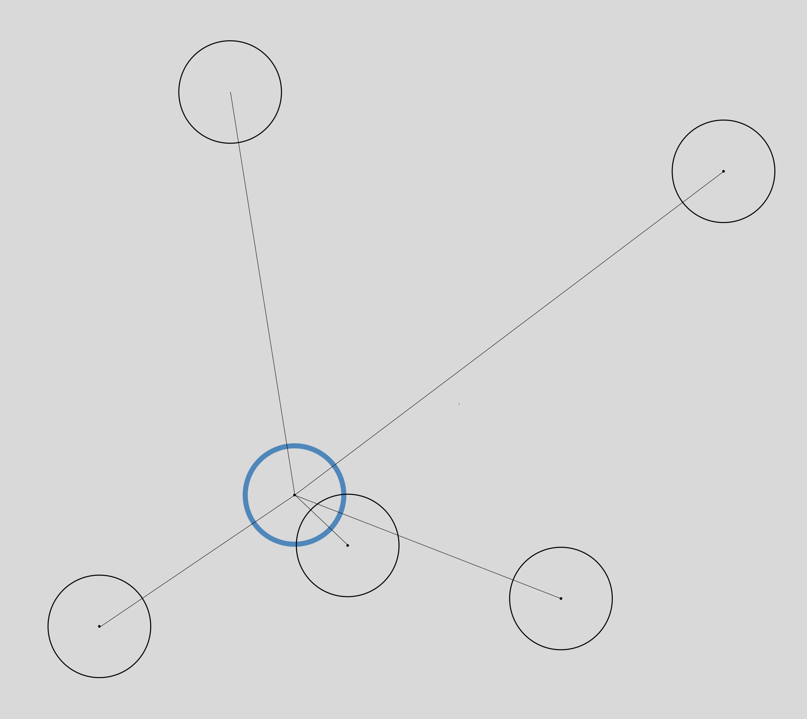
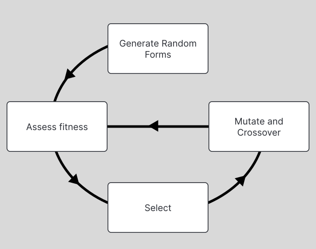
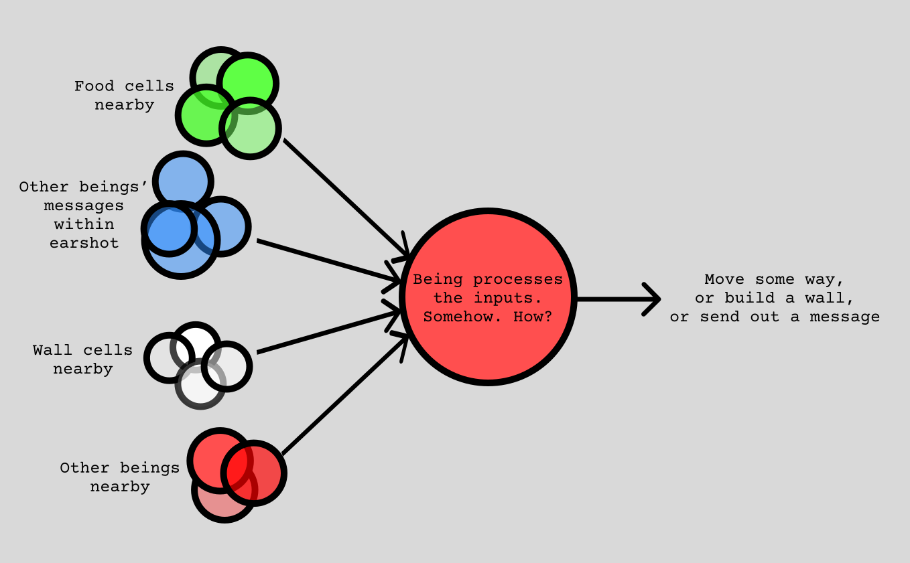
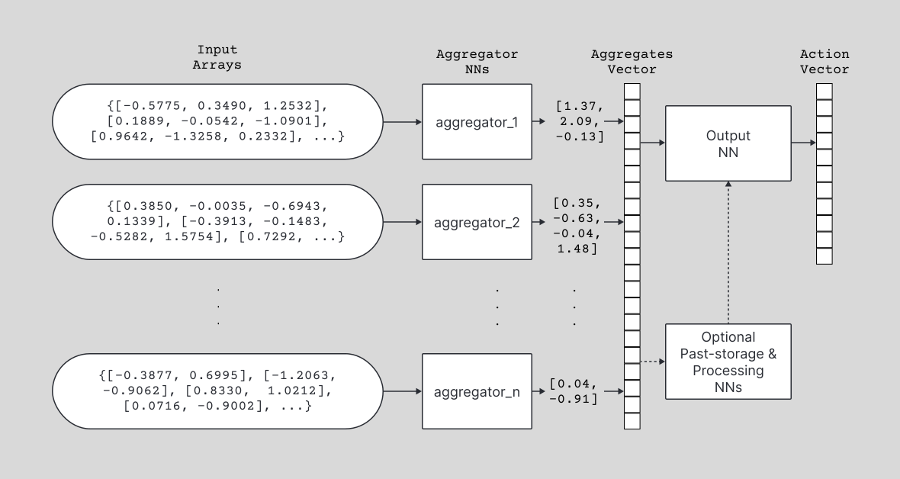

Welcome!
What is Samsarsa?
I wanted to see if Neural Networks could evolve a form of communication in a survival setting with no initial priming. In Samsarsa, tiny neural networks embody little creatures in an environment in which they can look around in a small radius, move around, eat food, build obstacles and bump into them and other creatures, and speak and hear. This book covers implementation details among other things.
Why "Samsarsa"?
Samsara is the endless cycle of death and rebirth in Buddhism, which felt apt given the repetitive death-rebirth cycle of genetic algorithms, and SARSA (State-Action-Reward; State-Action) is a very important classical algorithm in Reinforcement learning, and stuck out to me as cool when I was studying Sutton-Barto (I have future plans to also try and implement other RL algorithms).
Check out the project repository! But if you're reading this, you probably were led here from there to begin with.
I implemented the entire thing in Rust: the physics engine, the visual rendering of the entire environment, and the neural networks, and the genetic algorithm and all of its components, and, well, all the rest of it. It took me a long long time, because this project was my first venture into the Rust programming language, and I was in college for a large chunk of the time. I revived the project after my graduation after a long hiatus, putting the pieces back together and finishing a first working prototype.
You can navigate either using the sidebar or the buttons on the sides (or at the bottom if you're on mobile). I used a book-building tool called mdBook for this website, and some of my own code on top.
Components
I'll walk you through the building blocks of the project at a fairly high level of abstraction. I'll spare you the implementation details wherever irrelevant. And, I will omit details of how everything is rendered, as the graphics are rather simple: they're literally all just circles. I used a powerful graphics crate called ggez.
The Physics Engine
Everything in the system, barring the world's walls, is represented as a circle. Circles are the simplest geometric shapes to implement physics for. All that a circle can do is move around, rotate, and bump into things. Checking for bumping-into-things-ness for simulated objects is a surprisingly annoying operation.
The problem is to be responsible for bunch of circles moving around in a large perimeter, and to make sure that none of them overlap, as it isn't very physics-y for physical objects to overlap. We can start by defining what a collision is. Thankfully since we're only working with circles and no other shape here, this is rather simple. Two circles are in overlap if the distance between their centres is less than the sum of their radii (radius-es). You can "resolve" this overlap by subtracting half of the vector of overlap from each of their positions (we assume that all the circles are massless and inelastic), and now they would be just in contact at a single point (i.e. sliding against each other). The more quickly you keep checking and resolving, the less glitchy it would look, since there isn't much room for very large overlaps to occur between frequent checks.
Now, to resolve all the overlaps for a given circle at a given point in time, naturally you have to check for overlap against every other circle in the world.
This means, if we have n circles in the world, and we have to check each circle against every other circle, we end up with roughly n^2 overlap checks. Well obviously, this is a huge issue, since even for a reasonable number of circles, the number of checks we have to perform at every step is gigantic.
But if you think about it, is it really even possible for a circle to collide with another all the way across the world? Why even waste time checking? If we're clever with how we store our circles, we really only need to check in a small neighbourhood around each circle. LOTS of Algorithms research has gone into this for more serious physics engines, but the simplest algorithm is: Divide your world up into a grid, and for a given circle, check only for other circles in its own gridsquare or the 8 surrounding it. This means, especially if the circles are more uniformly distributed in the world, the number of checks goes down to much, much lower than n^2.
After making this switch, I was able to simulate upwards of 50 thousand circles moving around at 60 timesteps a second, at a decent physics fidelity (simply put, how quickly we update positions and squash overlaps). Of course, this number was bound to go down once food and obstacles went into place, and tank once the actual sense-action implementation of neural networks was added.
Genetic Algorithms
Why?
Natural selection is the most robust optimum-search algorithm in the universe. You and I are its products too1. Naturally, it is a very enticing model in fields that concern themselves primarily with solving problems by finding good solutions in a vast space of possible solutions.
Reinforcement Learning (RL) algorithms are predicated on the existence of a reward function. They suffer when the reward function is not well defined or not particularly talkative, and either ungodly amounts of compute, or extremely painstaking reward-function engineering by domain experts, or usually both (c.f. pretty much any deep-learning publication in RL) compensate for it.
Genetic algorithms, though weakly subsumed by the "RL" umbrella, are far easier to implement than a lot of flagship RL algorithms, far more robust to "moving-target" rewards where the nature of the required task evolves over time, and do relatively okay even under very quiet reward functions, such as when "time spent alive" is the only metric available to assess a solution. They may also be less inclined to overfit to the fitness function. It is a very common observation that in some RL situations, solutions are often loopholes that maximise the fitness function vacuously, bypassing competence, and even if they manage to appear to perform as expected, have countless blindspots.
How?
There is an "environment" or more generally a "fitness function" that individuals can interact with and be assessed by. At the very beginning, a large number of individuals are birthed with randomly assigned forms. What a "form" is and what the fitness function is, are very domain-specific questions. For example, if looking to improve how aerodynamic a certain vehicle part is, the "form" would be the physical structure of the part, and the fitness function, the metrics of testing this form in a physical fluid simulation. But in other settings, it could also be how an individual "acts" in an environment based on the sensory inputs it is given.
Two tasks, running essentially on loop, give the general struction of the algorithm:
-
Selection2
When a "generation," or one iteration of the [form-generation, fitness assessment] cycle concludes, individuals with the best fitness are selected as prospect "parents" to the next generation. This could either be through assigning a higher probability to them when selecting parent forms, or discarding all the other forms entirely, or some combination of the two.
-
Crossover and Mutation
We need to describe how one or more parent-forms inform the creation of a child-form. In a lot of cases, "sexual" reproduction is the model, where two parent forms are chosen and "combined" to produce a new form, as this takes a much wider sweep of the search space.
Crossover deals with how old forms will be combined to create new ones.
Sometimes, when convenient, this could be as simple as linearly-interpolating two parents by some constant:def produce_child(parent1, parent2, lerp_constant): child = parent1 * lerp_constant + (1 - lerp_constant) * parent2 return childMutation helps "explore" out into the space of all possible solutions, instead of being confined to the convex hull of the original starting population, which might not house any good solution at all. In its simplest form, it could be as simple as adding a small randomness evenly to a form first generated by crossover:
def produce_and_mutate_child(parent1, parent2, lerp_constant, mutation_rate): mutant_form = generate_random_form() child = produce_child(parent1, parent2, lerp_constant) child = child + (mutant_form * mutation_rate) return childDescribing the crossover and mutation functions is an extremely involved process in any serious implementation, and this is usually the step where the most domain knowledge is injected into the algorithm. Whether the algorithm will find a really good solution, or a solution at all, is really sensitive to how well these functions are defined. The toy functions above are only for illustrating the basic structure of this step.
When?
When other standard NN algorithms are infeasible. In a lot of situations, Gradient Descent is not an option at all, since GD requires that the fitness function be a differentiable function, and fitness in a lot of contexts is quite arbitrary, such as the sum of small rewards accrued over time, or duration of survival, etc. Even other RL algorithms that address such "black-box" fitness functions are exceedingly cumbersome to implement, and require an astronomical amount of individual-fitnessfunction interaction data.
But! It should be noted that GA are not a silver bullet either, and often impractical in deep-neural-network settings, given the vastness of the search spaces, and sensitivity of behaviour to small changes in form, and difficulty in conceptualizing mathematically meaningful crossover and mutation operations, and the computational load of keeping around and operating large numbers of individuals.
Who?
What do you mean?
What?
What??
1Probably didn't do that great of a job with me, but point stands.
2Often, when using "Survival of the fittest" as an arguemnt to defend generally evil behaviour, midwits operate with the notion that the "fittest" in the physical sense should have free reign over the weak, and therefore, subjugation is the natural order. But "fit" in the context of evolution refers to how well an individual fits the evolving needs of its environment. A gorilla is no more "fit" than a wittle baby kitten. Highly social species, in every single case, thrive when the strong consistently defend the weak. Even as far back in time as when the Neanderthals were still around, there is evidence that the less-able were taken care of dearly, and led long, happy lives amongst their tribe.
Beings' Sense-Actions
For the little circle-beings to interact with their world, by moving around, eating food, and placing walls, they need to
1. Have "sense organs"
In machine learning, everything is a vector. Your name is a sequence of vectors. You're probably a vector reading this. Neural networks can only operate on vectors. This means that their "sensory" inputs should come in the form of vectors, and naturally, we receive their "action" outputs as a vector too. This is my approach:
Remember our surround-collision-checking algorithm? When you're a circle looking at another circle for overlap, you can also look at all of its inner details at the same time! If it's a being-circle, its health, and the relative angle of your orientation to it. If it's a food-circle or a wall-circle, its age/value. And naturally, the relative distance between it and yourself. All of these can go into their own arrays in your own memory. It would look something like this:
[being/food/wall]_circles_inputs = {[2., 3.4, 5.234], [1.34, 2.163, 9.67], ...}
Additionally, since they can "speak," it would be pointless if they couldn't also "hear." And what is speech? You guessed it, a vector. Like before,
speech_inputs = {[1, 2, 3, 4, 5], [7, 8, 9, 10, 11], ...}
# got lazy with typing so many floating-point numbers
2. "Act"
Once all of these vectors are collected into a bunch of arrays, they're fed into our being-neural-networks, which spit out action vectors, which comprise these values:
- forward-backward change in position (single value,
-1 <= x <= 1) - change in rotation (single value,
-1 <= x <= 1) - whether to build a wall (single value,
x < 0 or x >= 0?) - whether to speak (single value,
x < 0 or x >= 0?) - if to speak, what to say? (multiple values i.e. a sub-vector, all in
range[-1, 1])
The movement-components (rotate, move, etc.) are implemented as updates to the physics engine in the next time-step. The "speechlets" are released as emanating bursts out into the world, centred at where they were first uttered. All beings that overlap with this expanding burst can "hear" it, i.e. the speech sub-vector goes into their speech_inputs array.
The next section deals with the architecture details of the neural networks.
Neural Networks
I used the Burn crate for all the neural network operations. I was hung up on how I should go about implementing the NNs for a really long time, and it was a major reason for my temprarily abandoning the project. Burn is quite good, and really fast!
Currently, I have two yes/no choices for how a neural network is constructed, giving us four possible architectures. I plan to add more in the future, but the computation is already quite costly, and it's a tradeoff of how fast you want the algorithm to run and iterate through generations, versus how sophisticated you want the NN itself to be.
If you are not at least a little bit comfortable with deep learning and neural networks, this may be a bit hard to follow. But I will try to explain as abstractly as will let me preserve meaning.
1. Choice of aggregator function
You remember our arrays containing all the inputs, one each for each input type. Naturally, during the course of a being's interaction with the world, depending on where it is, among other things, the lengths of these arrays will vary. If nobody's feeling talkative, the speech_inputs array will be empty, for example.
How do you take these varying-length arrays, and map them to a single vector? I have two different maps, with vastly different computational costs.
Now, there is one crucial requirement that a prospect aggregator function must satisfy: Its output should remain the same no matter how the input array is "ordered" (permutated). That is, aggr([1, 2]) should be exactly equal to aggr([2, 1]). This is a very strong constraint (called permutation-invariance), and it is difficult to design functions that meet it without making some sacrifices.
sum(f(x))
-
Consider our
being_inputsarray from the beings page:{[2., 3.4, 5.234], [1.34, 2.163, 9.67], ...} -
The inner vectors are
3long, so we say that the array has shape(N, 3). -
Consider a neural network
fthat has an input size of3, and an output size ofm. All this means is that it takes3-long vectors, and returnsm-long vectors. -
Now, each of the input vectors in our array, we run through
f, and collectf's outputs in a different array. Naturally, this new array will have shape(N, m). -
Now, we sum this
(N, m)array along the first dimension: If our array was{[1, 2, 3, 4], [5, 6, 7, 8], [9, 10, 11, 12]}after running the original
being_inputsarray throughf, then after performing this sum operation, it becomes a single vector,[15, 18, 21, 24], of shape(1, m). -
You might have caught the drawback here. When we run
fover each input separately, we don't account for how assessing one input might benefit from taking into consideration some other input. For example, if you notice food, but also that it is completely surrounded by walls, you will conclude that there is no point in reaching for it. But if you assess the food and the walls completely in isolation like we are doing here, there is no way you can make this seemingly obvious inference.
Self-Attention
I implemented, if poorly, Set-Transformers! I will give a simple overview. But you should acquaint yourself with the self-attention mechanism, if this is to fully make sense.
-
In its essence, an attention function operates on two input vectors: a "key" vector and a "query" vector, and produces a measure, usually a single number (called a weight), for how relevant it thinks the query vector is in the assessment of the key vector.
-
When given an entire array of inputs, like our arrays, looping over each of the inputs,
- it fixes the current input of the loop as the key vector.
- every other vector in the array, one at a time, it treats as the query vector, and produces an array of weights.
- using these weights, it produces a "value" vector, which is some combination of each query vector and its corresponding weight, and adjoins (usually, adds) this value vector to our key vector.
- After this is done for every single vector in our array, now we perform our
sum(f(x)). But you see how the functionfhere is vastly more sophisticated, since it takes into account all the rest of the array for each input, when previously, it depended only on the given input.
But you might have noticed the issue: this key-query business is extremely expensive! Whereas sumfx's computational load was proportional to the length of our arrays, using attention as our aggregator instead is proportional to the square of the length. This is unconscionable if we're working with humble little machines like I am, without gigantic GPUs.
Anyway, this single vector of shape (1, m), we use downstream in our bigger neural network, by in some form combining it with the other (1, ...) vectors produced for the other forms of input, before coming up with our final being output.
The way that I am currently doing it is, after we've performed the above for all kinds of vector, being, food, wall, speech, we concatenate the final (1, ...) vectors along the first axis, yielding (1, m + n + o + p), a fairly long vector, that we finally map to our desired output (actions + speech vector as discussed in the beings section) shape using another little neural network.
2. Whether the NN remembers the past
Once done with the previous aggregation portion of sense-action we have a choice to either discard past inputs, or take them into consideration, as-is (as Transformers do), or in a summarized form (see LSTMs for example). Now if we were to use gradient descent, this would get more complicated since we would have to include the "time" aspect of it into our backpropagation (but even that has been buried under like 20 years of library abstractions).
So far, I have only implemented LSTMs for past-processing. Transformers would work too, but as we saw before, the computation costs are huge, and also, remember permutation-invariance? Whereas it was indispensible before, it's actually a hurdle now! Because when looking back into the past, the order in which things happened is incredibly important! So much work goes into undoing this permutation-invariance to put Transformers to use in sentence-modelling (all the rage these days). And of course, the n^2 computation cost too.
I will not get into how an LSTM works here. They are a subset of Recurrent Neural Networks. The original paper I have linked above too is rather dense, and a lot of the design choices are rather arbitrary too in my opinion. But essentially,
When an RNN is given an input x, there are two consequences:
- Like in traditional "feed-forward" NNs, there is an output
yproduced by the processing ofx. - Additionally, unlike FF-NNs, there is an updation in the "internal state" of the RNN during the processing of
x.
This means that x will now have an impact on the processing of future xs as well. It has been "remembered" in a way; summarized into the RNN's memory. This summarization is usually done by smaller NNs that are sub-components of the RNN.
Possible combinations
These choices give us four possible NN architectures:
(sumfx, no-past)(sumfx, lstm)(self-attn, no-past)(self-attn, lstm)
This list also happens to occur in increasing order of computational load.
Considerations
-
Computational costs, of course, are a huge factor in how effective our search is. Even in perfect conditions, it might just take too long to iterate over generations.
-
On the other hand, if our NNs are very trivial, they might just not be big enough by design to solve a complicated task.
-
However, there is also a converse: the lower the complexity of our beings, the bigger a sweep we can take of their search space with the same relative effort. Since unlike in Gradient Descent, we don't have exact, pointed directions to take in the search space, we might just wander in the dark forever, past good regions, never finding a good solution region, if the NNs are gigantic, with millions of parameters.
Limitations
- So far, my mutation-crossover functions are primitive.
- The first, that I have now deprecated, was the very same toy-function that we went over earlier: linear-interpolation. This is all but useless where individuals are not very small vectors. For NNs, it is a lost cause.
- The other, is splicing: for every parameter in the NN, it is a choice of which parent that particular parameter will come from, and not a linear combination.
- There are vastly more sophisticated mutation-crossover methods for NNs. World Models, that implements some really effective mut-cross, is a personal favourite, and is just about the only modern AI paper that sticks out to me as innovative in my entire time of studying the subject. These are well beyond what my time will allow me to implement (and, I don't really like linear algebra all that much).
- Well, my humble little laptop. I do not have a beefy GPU, and I have 8 CPU cores. Those more computationally gifted may see the algorithm through to fruition. I won't.
- And, I haven't really seen any evidence, even remotely, of a communication system having evolved among the beings. But, I couldn't really run any session for more than a few hundred generations.
Of course, there was food-seeking, obstacle-avoiding, conflict-avoiding behaviour, but nothing in the way of trying to speak. But these are all incredibly sensitive to the penalties incurred for movement, wall-construction, and speaking as well.
Futures
I will be honest, I am up to here with chores and tasks and errands and such for college applications. And if I do manage to get in a course, I will have of course,work. I don't see myself working on this project very actively any longer, at least in the foreseeable future.